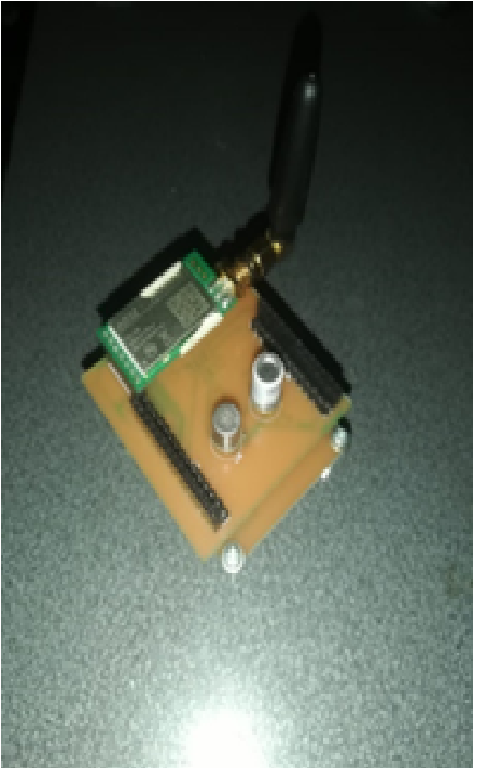

Este trabajo presenta el diseño, implementación, parametrización y evaluación de un prototipo de trasmisor inalámbrico o nodo sensor, para la medición de gas metano (〖CH〗_4) y monóxido de carbono (CO) con sensores del proveedor Figaro, que permite la transmisión de estos niveles a través de una red WSN (Wireless Sensor Network), a partir de la información recolectada con nodos bajo el estándar LoraWPAN, en un sistema micro controlado basado en PIC. Estos se integran en circuitos impresos (PCB), usando tecnología de montaje superficial (SMD) buscando la optimización del espacio y diseño en factor de forma apropiado para el entorno confinado. El prototipo de red final se conecta con una interfaz grafica donde se controla una base de datos MySQL donde se almacena la información recibida, además se evalúa teórica y experimentalmente la potencia de recepción de estos nodos obteniendo información de la potencia de recepción y cómo parámetro de desempeño se mide la tasa de error de paquetes (PER), las pruebas se realizaron en el pasillo de un edificio antiguo garantizando un entorno confinado para establecer una distancia máxima donde se puedan garantizar conectividad y confiabilidad con un bajo impacto en la PER. El sistema en general tiene como objetivo apoyar con el monitoreo y alerta en la gestión de riesgos de la minería subterránea de carbón.
Para la realizar pruebas de trasmisión y establecer la cobertura y confiabilidad que posee cada nodo sensor, se propone la arquitectura de los nodos sensores mostrada a continuacion:
Partiendo de este punto se realizó el diseño y selección de dispositivos para la integración de un prototipo de nodo transmisor, empezando por el diseño del bloque de sensado; debido a la aplicación se comenzó con el tipo de sensores para la medición de gas metano y monóxido de carbono para obtener información sobre los dispositivos y los circuitos adicionales que estos requieren para funcionar bajo las condiciones de un entorno confinado, determinando la viabilidad en términos monetarios y funcionales.
Luego se escogió el microcontrolador para el bloque de procesamiento y se procede hacer un estudio de la potencia o consumo promedio que la interconexión de todos los bloques requiere debido a que se tiene como requerimiento de diseño que sea portable y esto hace que use baterias y el reto de estas aplicaciones es lograr estar en linea el mayor tiempo posible. y poder diseñar el bloque de potencia, como el dispositivo tiene como finalidad ser portable requiere de baterías para dar una autonomía.
Después de tener las características de consumo de potencia pasamos a la selección de los dispositivos del bloque de potencia, para que se regule la energía desde las baterías hacia cada uno de los bloques de sensado, procesamiento y trasmisión, en este punto se tuvo en cuenta el consumo de potencia de los sensores por lo que se estableció que el uso de estos es solo requerido por el microcontrolador cuando se necesite hacer una medición, por lo que se planteó diseñar un prototipo entregable de dos fases en las que los bloques quedasen separados tanto el procesamiento con el sensado y trasmisión. Los requerimientos para la primera fase son:
En esta fase se realizó un estudio de los circuitos necesarios para que el microcontrolador tenga un correcto funcionamiento, el cual es alimentado a 5V con un par de baterías de 3.7 V de 1700 mA conectadas en serie al regulador de voltaje que tiene como función regular la tensión al nivel requerido por el microcontrolador, en la Figura 2 acontinuacion se muestra con detalle la placa simulada e implementada físicamente.
El regulador fijo LM1117 de la placa procesamiento es seleccionado por su capacidad de corriente y su bajo consumo de potencia en funcionamiento, y lo hace ideal para aplicaciones con baterías (T.Instruments), en la implementación de este circuito se requieren dos capacitores uno de entrada y uno de salida, el PCB diseñado se muestra en la figura 3
Con este circuito de la Figura 3 podemos alimentar o energizar la placa de procesamiento, en donde está situado el microcontrolador. La segunda fase consiste en el diseño de la placa de sensado y comunicación definiendo los siguientes requerimientos para su implementación:
En esta fase se implementó un circuito de regulación con habilitación para controlar el encendido de los sensores y con esto aumentar la vida útil y una autonomía mejorada de cada módulo, para satisfacer este requerimiento se seleccionó el circuito integrado LM2576 que permite habilitar el encendido de los sensores. Para la tarjeta de comunicación lora sx1278 se conecta al regulador fijo de la placa de procesamiento con el fin de habilitar una conexión disponible y confiable a otros módulos, la placa diseñada se presenta en la figura 4
Después de obtener los dispositivos y tener los circuitos impresos diseñados se procede a soldar los componentes obteniendo el prototipo entregable de nodo sensor mostrado en la figura 5
La recolección de datos requiere de una unidad de procesamiento o CPU que se encarga de tomar la medición presente en el sensor y enviar a la estación base la información para ser mostrada en pantalla o almacenada; para esta labor se seleccionó el microcontrolador PIC18F26K80, con características de uso industrial, bajo consumo de potencia y que posee los periféricos necesarios para la aplicación, dentro de sus características cuenta con:
Estos circuitos integrados (IC) se programaron en MPLABX IDE haciendo uso del compilador XC8 para implementar el diagrama de flujo que se presenta en la Figura 25 para medir y trasmitir por radio frecuencia las concentraciones de los gases. Estas mediciones se adquieren haciendo uso del conversor análogo a digital (A/D) de 12 bits (incluido en el microcontrolador seleccionado) el cual se activa únicamente al momento del muestreo obteniendo la información de la variación de voltaje de los sensores que miden la concentración de los gases metano y monóxido de carbono junto al valor del voltaje de la batería, a cada medición se le aplica un filtro digital de respuesta infinita al impulso (IIR) pasa bajas con las siguientes especificaciones de diseño: